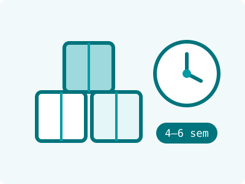

Guía · ProducciónGuide · Production

Las dos preguntas que definen si un proyecto arranca o se queda en idea: ¿cuál es el pedido mínimo? y ¿cuánto tarda? Aquí te explicamos cómo funcionan ambas en la práctica, para que planees tu lanzamiento con fechas y números reales.
The two questions that decide whether a project launches or stays an idea: what's the minimum order? and how long does it take? Here's how both work in practice, so you can plan your launch with real dates and numbers.
No son un capricho del fabricante. Cada corrida de producción implica limpiar y preparar equipos, verificar materias primas, hacer controles en proceso y análisis de laboratorio del lote — trabajo que cuesta casi lo mismo para 1,000 piezas que para 10,000. El mínimo existe para que tu costo unitario sea competitivo y tu producto pueda ganar dinero en el anaquel.
They're not a manufacturer's whim. Every production run involves cleaning and setting up equipment, verifying raw materials, in-process controls and lab testing of the batch — work that costs nearly the same for 1,000 units as for 10,000. The minimum exists so your unit cost stays competitive and your product can make money on the shelf.
El número exacto depende de tu fórmula y presentación — por eso lo confirmamos en la cotización, no con una tabla genérica.
The exact number depends on your formula and presentation — that's why we confirm it in your quote, not with a generic table.
En resumen: con fórmula existente, 4 a 6 semanas desde la aprobación de muestras; un desarrollo desde cero, 8 a 12 semanas. Si alguien te promete la mitad, pregunta qué controles está saltándose.
In short: with an existing formula, 4 to 6 weeks from sample approval; a from-scratch development, 8 to 12 weeks. If someone promises half that, ask which controls they're skipping.
¿Quieres saber el mínimo y la fecha de entrega para tu producto? Mándanos tu brief y en 3–5 días hábiles tienes cotización con calendario incluido.
Want to know the minimum and delivery date for your product? Send us your brief and within 3–5 business days you'll have a quote with a calendar included.
Cuéntanos tu idea y recibe una cotización en 3-5 días hábiles.
Tell us your idea and receive a quote within 3-5 business days.
Cotizar mi proyectoRequest my quote